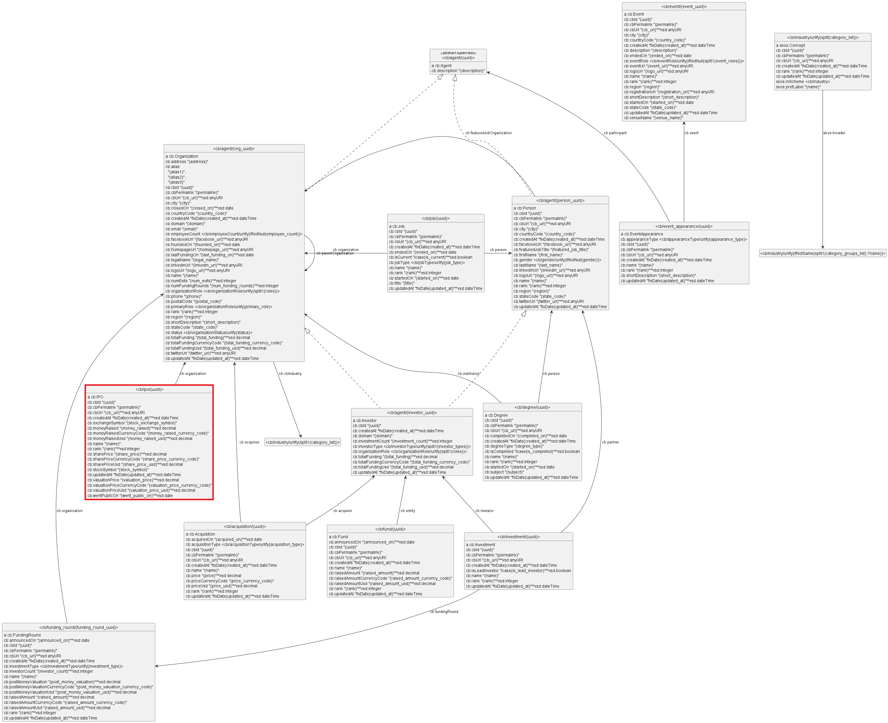
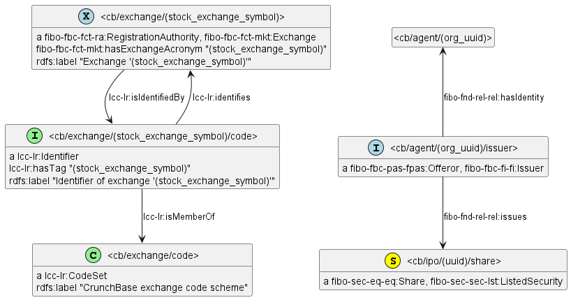
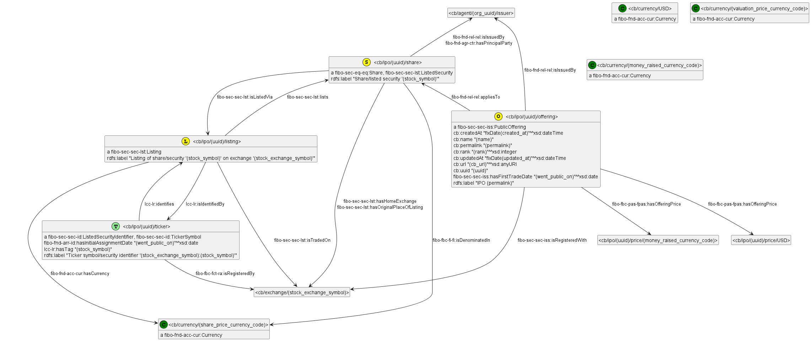
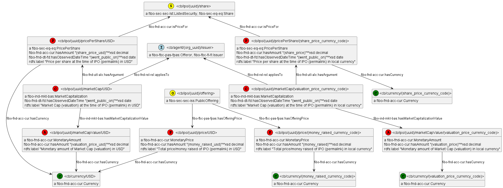
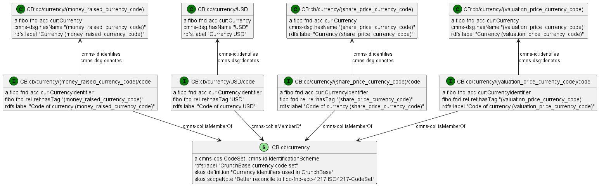

Representing Crunchbase IPOs in FIBO
5-Sep-2023
The Financial Industry Business Ontology (FIBO) by the Enterprise Data Management Council (EDMC) is a family of ontologies and a reference model for representing data in the financial world using semantic technologies. It is used in fintech Knowledge Graph (KG) projects because it offers a comprehensive and principled approach to representing financial data, and a wide set of predefined models that can be used to implement data harmonization and financial data integration. The 2022Q2 FIBO release consists of 290 ontologies using 380 prefixes (see [5, 6] for details) that cover topics such as legal entities, contracts, agency, trusts, regulators, securities, loans, derivatives, etc. FIBO's reach and flexible ontological approach allow the integration of a wide variety of financial data, but it comes at the price of more complex representation.
Crunchbase (CB) is a well-known dataset by TechCrunch that includes companies, key people, funding rounds, acquisitions, Initial Public Offerings (IPOs), etc. It has about 2M companies with a good mix of established enterprises (including 47k public companies), mid-range companies and startups. We (Ontotext and other Wikidata contributors) have matched 72k CB companies to Wikidata, see this query.
I explore the representation of Crunchbase data (more specifically IPOs) in FIBO and compare it to the simplest possible semantic representation. I therefore illustrate the complexity of FIBO, and explain its flexibility along the way. I finish with some discussion and conclusions as to when FIBO can bring value to fintech KG projects.
This example is available as open source at https://github.com/VladimirAlexiev/crunchbase-fibo and includes the following files:
Makefile: orchestrate file generation with makeipos-sample.csv: 4 sample CSV rowscb-model.ttl, cb-model.png: simple CB model (all CB data) and generated imageipos-agents.ttl, ipos-agents.png: part of model and generated imageipos-offering.png, ipos-offering.ttl: part of model and generated imageipos-financials.png, ipos-financials.ttl: part of model and generated imageipos-currencies.ttl, ipos-currencies.png: part of model and generated imageipos-fibo.ttl, ipos-fibo.png: full FIBO IPO model (concatenated) and generated imageipos-fibo.ru: OntoRefine SPARQL UPDATE transformation generated from the full FIBO IPO modelcommon.h: C preprocessor file with SPARQL "functions" used in generating transformationprefixes.ttl, prefixes.rq: all used prefixes in Turtle and SPARQL formatREADME.md, README.html: this writeupbibliography.bib, bibliography.html: bibliography source and rendered HTMLacm-sig-proceedings-long-author-list.csl: bibliography stylepandoc-defaults.yaml: pandoc settingspandoc-header.html: JavaScript to enable syntax highlightingcss/*: styles for syntax highlightingCrunchbase consists of 18 tables (available as CSV and a JSON API) that cover companies, universities, persons, financial transactions, events (conferences and workshops), etc. The gist Crunchbase Challenge describes the complete database, but in this blog post I focus on Initial Public Offerings (IPOs). An IPO is when a company goes public (is listed at a stock exchange and starts trading), which is considered one possible "exit" for its investors and founders.
Crunchbase has a table ipos with the following fields:
| field | type | descr |
|---|---|---|
| uuid | string | Unique identifier, never changes |
| name | string | Entity name (often empty for IPOs) |
| type | string | Entity type (always "ipo" for IPOs) |
| permalink | string | Suffix of cb_url. Despite the name, sometimes changes |
| cb_url | anyURI | Full Crunchbase URL of the IPO event |
| rank | integer | Crunchbase rank (smaller is "more important") |
| created_at | dateTime | When the Crunchbase record was created |
| updated_at | dateTime | When the Crunchbase record was updated |
| org_uuid | string | Points to the company that was listed |
| stock_exchange_symbol | string | Exchange code. Uses internal Crunchbase codes that are ambiguous |
| stock_symbol | string | Ticker on the exchange |
| went_public_on | dateTime | When the company went public (IPO date) |
| share_price_usd | decimal | The share price for the stock at the time of IPO, in US dollars |
| share_price | decimal | The share price for the stock at the time of IPO, in local currency |
| share_price_currency_code | string | Local currency of share price |
| valuation_price_usd | decimal | Valuation of the Organization at IPO, in US dollars |
| valuation_price | decimal | Valuation of the Organization at IPO, in local currency |
| valuation_price_currency_code | string | Local currency of the valuation |
| money_raised_usd | decimal | Total amount raised from the IPO, in US dollars |
| money_raised | decimal | Total amount raised from the IPO, in local currency |
| money_raised_currency_code | string | Local currency of the total amount raised |
There are also organization attributes (org_name, org_cb_url, country_code, state_code, region, city) that are redundant, thus not shown above.
stock_exchange_symbol uses internal Crunchbase exchange codes that are sometimes ambiguous
(for example, "MSE" may mean the Madrid Stock Exchange, Metropolitan Exchange in India, Mongolia Stock Exchange, etc).
We (Ontotext) have mapped all 156 codes to Wikidata, together with the unambiguous Market Identification Codes (ISO 10383 MIC),
see this query:select ?item ?itemLabel ?cb ?mic {
?item wdt:P7534 ?mic; # ISO MIC
p:P528 [ps:P528 ?cb; # catalog code
pq:P972 wd:Q10846831]. # catalog
service wikibase:label { bd:serviceParam wikibase:language "[AUTO_LANGUAGE],en". }
}stock_symbol is the company code on that exchange.
This is a valuable field for coreferencing public companies across datasets, but one should beware that:
For example, here are the first 4 CB IPO records
| field | example1 | example2 | example3 | example4 |
|---|---|---|---|---|
| uuid | 72d30ebd-53ef-2486-6c29-22785c5173ce | 3ad2b068-2d97-f646-0b80-1e5f3d7adfc4 | a265c6f6-4b96-4079-096a-967a37f3da2b | ee426509-826e-5dd0-9309-e79c8f384904 |
| type | ipo | ipo | ipo | ipo |
| permalink | microsoft-ipo--72d30ebd | the-walt-disney-company-ipo--3ad2b068 | divx-ipo--a265c6f6 | xo-group-ipo--ee426509 |
| cb_url | https://www.crunchbase.com/ipo/microsoft-ipo--72d30ebd | https://www.crunchbase.com/ipo/the-walt-disney-company-ipo--3ad2b068 | https://www.crunchbase.com/ipo/divx-ipo--a265c6f6 | https://www.crunchbase.com/ipo/xo-group-ipo--ee426509 |
| rank | 31712 | 44186 | 14752 | 19369 |
| created_at | 2008-02-09 05:25:18 | 2008-02-09 05:40:32 | 2008-02-25 23:52:11 | 2008-02-29 00:31:34 |
| updated_at | 2018-02-12 23:11:05 | 2019-02-25 22:31:49 | 2018-02-12 23:57:54 | 2018-02-12 23:41:42 |
| org_uuid | fd80725f-53fc-7009-9878-aeecf1e9ffbb | 756936c0-c335-f0ae-0a3d-fe26bdff5695 | 73296f0d-85a5-78d5-90b3-86c5f8981ba9 | ff8439cf-097c-a88a-9bb9-dd83d23aa14b |
| stock_exchange_symbol | nasdaq | nyse | nasdaq | nyse |
| stock_symbol | MSFT | DIS | DIVX | XOXO |
| went_public_on | 1986-03-13 | 1978-01-13 | 2006-10-22 | 1999-12-02 |
| share_price_usd | 16.0 | |||
| share_price | 16.0 | |||
| share_price_currency_code | USD | |||
| valuation_price_usd | 160000000 | |||
| valuation_price | 160000000 | |||
| valuation_price_currency_code | USD | |||
| money_raised_usd | 300000000 | 145000000 | 35000000 | |
| money_raised | 300000000 | 145000000 | 35000000 | |
| money_raised_currency_code | USD | USD | USD |
The simplest possible semantic representation of CB uses one class per table
(subsidiary tables like org_descriptions and org_parent are merged to other classes; and org_parents is a direct RDF relation).
I make URLs based on entity type and uuid.
I leverage the fact that UUIDs are globally unique (no conflicts between classes) to put Organizations and People under the abstract superclass Agent and in the same URL namespace cb/agent:
this is needed since some financial transactions (in particular funding_round) can involve a mix of persons and organizations.
The following diagram shows the complete CB semantic model of 18 entities:

It is generated from a semantic model in Turtle format (cb-model.ttl) using rdfpuml [3] and PlantUML.
This model is concatenated from 18 individual per-table models that include source field names in parentheses (also seen on the overall model).
The individual models are used to generate semantic transformations for Ontotext Refine in the form of SPARQL Update queries.
The same updates are used for both initial ingest and update, leveraging a global timestamp and using named graphs per each table row (over 10M graphs).
See gist Crunchbase Challenge and [1] for more details,
including the model source cb-model.ttl and timing (performance) information of the semantic conversions.
Important: Please note that this model covers all of CB, not just CB IPOs. The IPO class (node) is shown with red border.
Now I turn to representing IPOs in FIBO by using the ontologies from the FIBO 2022Q2 release (see gist Converting FIBO from RDF to Turtle).
I use the following colors in the diagrams below.
See the next sections for entity diagrams of different kinds of entities (partial models), followed by an overall model diagram, and a binding of the colors to specific RDF classes.
First I represent the agents involved in the IPO: Exchange and Issuer. (Perhaps the main agent is the public that invests money into the shares, but they are not individually represented in FIBO).

Issuer of shares is typically also their Offeror, but I guess it's possible for the Offeror to be a third partyExchange is also typically the RegistrationAuthority of tickers and shares on that exchange, but I guess exceptions are possibleNow I represent the main entities of the IPO event, which in FIBO are:

Please note that PublicOffering includes a number of non-FIBO properties (i.e. CB custom properties):
cb:uuid '(uuid)';
cb:name '(name)';
cb:permalink '(permalink)';
cb:url '(cb_url)'^^xsd:anyURI;
cb:rank '(rank)'^^xsd:integer;
cb:createdAt 'fixDate(created_at)'^^xsd:dateTime;
cb:updatedAt 'fixDate(updated_at)'^^xsd:dateTime.Truth be told, these are not very semantic:
name, permalink, url, rank) that is not properly attributed to CB;
url could be mapped to a standard FIBO property.
FIBO has a property for "home page" but it's not fair to say that CB's page about an IPO is its home page,
because in all likelihood there are better pages at the Exchange and Company websites describing the IPOschema.org.
It has no less than 5 properties for relations of varying strength and nuance: url, sameAs, mainEntity, about, mentions.
(And there's also keywords used for free-text keywords.)uuid, createdAt, updatedAt)
that is not about the event, but about CB's record of the event.However, I didn't want to complicate the model even further by placing these fields in yet more FIBO nodes.
Furthermore, we'd have to repeat the same event nodes for both Offering and Listing.
The 3 financial factors (share price, market capitalization, money raised) are expressed in 2 currencies each:

Of the 3 factors, Market Capitalization is represented using a more complex pattern:
<.../marketCap/...> node being MarketCapitalization, which is based on the pricePerShare has has value <.../marketCapValue/...><.../marketCapValue/...> node being MonetaryAmountPlease note the URL patterns used by the financial nodes in "national currency" vs in "USD":
<cb/ipo/(uuid)/pricePerShare/(share_price_currency_code)> vs <cb/ipo/(uuid)/pricePerShare/USD>
<cb/ipo/(uuid)/marketCap/(valuation_price_currency_code)> vs <cb/ipo/(uuid)/marketCap/USD>
<cb/ipo/(uuid)/marketCapValue/(valuation_price_currency_code)> vs <cb/ipo/(uuid)/marketCapValue/USD>In an initial version of the mapping, I used a simpler pattern:
<cb/ipo/(uuid)/pricePerShare> vs <cb/ipo/(uuid)/pricePerShareUsd>
<cb/ipo/(uuid)/marketCap> vs <cb/ipo/(uuid)/marketCapUsd>
<cb/ipo/(uuid)/marketCapValue> vs <cb/ipo/(uuid)/marketCapValueUsd>The difference is subtle but crucial: the current URL pattern effectively merges the financial nodes where the "national currency" is "USD". Since many IPOs are denominated in USD, I can save a significant number of nodes by using URL patterns that incorporate the currency code.
I assume that the monetary fields (eg (money_raised) vs (money_raised_usd)) are identical for US IPOs.
If that's true, then the multiple instances of the same statement will be collapsed by the semantic repository on data ingestion,
so we won't have duplicate statements in the repository.
Finally, I represent the currencies used for the Financials. This includes USD plus up to 3 national currencies for the 3 financials. (I can't imagine an IPO that would use different national currencies for its 3 financials, but Crunchbase has used separate fields, so I represent separate nodes).

Please note that these nodes are shared between all IPOs, so they are not a large number. And for IPOs that use the same currency for their 3 financials, only 1 pair of nodes will be generated.
FIBO distinguishes betwen currencies and their codes in a particular code set (in this case "CrunchBase currency code set").
But CB uses ISO 4217 standard currency codes, and FIBO already includes such data in the ontology FND/Accounting/ISO4217-CurrencyCodes.rdf, e.g.:
fibo-fnd-acc-4217:USD
rdf:type fibo-fnd-acc-cur:CurrencyIdentifier , owl:NamedIndividual ;
fibo-fnd-rel-rel:hasTag "USD" ;
rdfs:label "USD" ;
cmns-dsg:denotes fibo-fnd-acc-4217:USDollar ;
cmns-id:identifies fibo-fnd-acc-4217:USDollar ;
fibo-fnd-acc-4217:USDollar
rdf:type fibo-fnd-acc-cur:Currency , owl:NamedIndividual ;
cmns-dsg:hasName "US Dollar" .
rdfs:label "US Dollar" ;
fibo-fnd-acc-cur:hasNumericCode "840" ;
cmns-cxtdsg:isUsedBy lcc-3166-1:VirginIslandsBritish ...So why didn't I reuse the FIBO currency nodes and instead made CB currency nodes? The reason is subtle and is described in fibo/issues/1816:
fibo-fnd-acc-4217:USDollarUSDfibo-fnd-acc-4217:USD, we can very easily find fibo-fnd-acc-4217:USDollar with a simple SPARQL querySo I decided to play it safe and use the CB currency nodes. The EDM Council has agreed to change the node names a bit to:
fibo-fnd-acc-4217:CurrencyCode-USD, fibo-fnd-acc-4217:Currency-USDollarAnd to add a separate coreferencing file that will have sameAs statements for each currency like this:
fibo-fnd-acc-4217:Currency-USDollar owl:sameAs fibo-fnd-acc-4217:Currency-USDGenerated with the following SPARQL query:
construct {
?curr owl:sameAs ?currAsCode
} where {
?code a fibo-fnd-acc-cur:CurrencyIdentifier; fibo-fnd-rel-rel:hasTag ?c; cmns-id:identifies ?curr.
bind(iri(concat(str(fibo-fnd-acc-4217:),"Currency-",?c)) as ?currAsCode)
}This will effectively add alias URLs for each currency (the two sameAs URLs shown above),
so now external data like CB can safely refer to currency nodes like fibo-fnd-acc-4217:Currency-USD.
Finally, I present the overall FIBO IPOs model:
It's a complex graph:
@prefix cb: <https://ontotext.com/crunchbase/ontology/> .
@prefix cmns-cds: <https://www.omg.org/spec/Commons/CodesAndCodeSets/> .
@prefix cmns-col: <https://www.omg.org/spec/Commons/Collections/> .
@prefix cmns-dsg: <https://www.omg.org/spec/Commons/Designators/> .
@prefix cmns-dt: <https://www.omg.org/spec/Commons/DatesAndTimes/> .
@prefix cmns-cxtdsg: <https://www.omg.org/spec/Commons/ContextualDesignators/> .
@prefix cmns-id: <https://www.omg.org/spec/Commons/Identifiers/> .
@prefix cmns-qtu: <https://www.omg.org/spec/Commons/QuantitiesAndUnits/> .
@prefix cmns-rlcmp: <https://www.omg.org/spec/Commons/RolesAndCompositions/> .
@prefix fibo-fbc-fct-mkt: <https://spec.edmcouncil.org/fibo/ontology/FBC/FunctionalEntities/Markets/> .
@prefix fibo-fbc-fct-ra: <https://spec.edmcouncil.org/fibo/ontology/FBC/FunctionalEntities/RegistrationAuthorities/> .
@prefix fibo-fbc-fi-fi: <https://spec.edmcouncil.org/fibo/ontology/FBC/FinancialInstruments/FinancialInstruments/> .
@prefix fibo-fbc-pas-fpas: <https://spec.edmcouncil.org/fibo/ontology/FBC/ProductsAndServices/FinancialProductsAndServices/> .
@prefix fibo-fnd-acc-cur: <https://spec.edmcouncil.org/fibo/ontology/FND/Accounting/CurrencyAmount/> .
@prefix fibo-fnd-agr-ctr: <https://spec.edmcouncil.org/fibo/ontology/FND/Agreements/Contracts/> .
@prefix fibo-fnd-arr-id: <https://spec.edmcouncil.org/fibo/ontology/FND/Arrangements/IdentifiersAndIndices/> .
@prefix fibo-fnd-rel-rel: <https://spec.edmcouncil.org/fibo/ontology/FND/Relations/Relations/> .
@prefix fibo-ind-mkt-bas: <https://spec.edmcouncil.org/fibo/ontology/IND/MarketIndices/BasketIndices/> .
@prefix fibo-sec-eq-eq: <https://spec.edmcouncil.org/fibo/ontology/SEC/Equities/EquityInstruments/> .
@prefix fibo-sec-sec-id: <https://spec.edmcouncil.org/fibo/ontology/SEC/Securities/SecuritiesIdentification/> .
@prefix fibo-sec-sec-iss: <https://spec.edmcouncil.org/fibo/ontology/SEC/Securities/SecuritiesIssuance/> .
@prefix fibo-sec-sec-lst: <https://spec.edmcouncil.org/fibo/ontology/SEC/Securities/SecuritiesListings/> .What is the reason for this complexity?
ReassignableIdentifier)I have validated this representation with the EDM Council (see fibo/issues/1808): performed 3 iterations and made all suggested additions/corrections.
I made the overall model by simply concatenating the Turtle files of the individual models presented in earlier sections.
Concatenating any Turtle files produces a valid turtle file, since @prefix and @base can occur anywhere in Turtle.
(But don't abuse this feature by redefining prefixes mid-way!)
If you have played with UML XMI files, the simplicity of composing semantic models by simply concatenating them should be refreshing. It mirrors the simplicity of semantic data integration by "simply" converting any kind of data to RDF, using consistent URLs, and "pouring" all data into a semantic repository.
I have used some rdfpuml (PlantUML) layout instructions in the models to improve the look of the overall model.
These specify the direction and length of a few arrows, and set colored circles for the classes (stereotype)
cmns-id:identifies puml:arrow puml:up.
cmns-rlcmp:isPlayedBy puml:arrow puml:up.
cmns-qtu:hasArgument puml:arrow puml:up.
fibo-fnd-acc-cur:isPriceFor puml:arrow puml:up.
fibo-fnd-rel-rel:isIssuedBy puml:arrow puml:up.
cmns-cxtdsg:appliesTo puml:arrow puml:up.
fibo-fbc-fi-fi:isDenominatedIn puml:arrow puml:down-4.
fibo-fbc-fct-mkt:Exchange puml:stereotype "(X,lightblue)". # also fibo-fbc-fct-ra:RegistrationAuthority
fibo-fbc-fi-fi:Issuer puml:stereotype "(I,lightblue)". # also fibo-fbc-pas-fpas:Offeror
fibo-fnd-acc-cur:Currency puml:stereotype "(C,green)".
fibo-fnd-acc-cur:CurrencyIdentifier puml:stereotype "(I,green)".
fibo-fnd-acc-cur:MonetaryAmount puml:stereotype "(A,red)".
fibo-fnd-acc-cur:MonetaryPrice puml:stereotype "(P,red)".
fibo-ind-mkt-bas:MarketCapitalization puml:stereotype "(C,red)".
fibo-sec-eq-eq:PricePerShare puml:stereotype "(P,red)".
fibo-sec-sec-id:TickerSymbol puml:stereotype "(T,lightgreen)".
fibo-sec-sec-iss:PublicOffering puml:stereotype "(O,yellow)".
fibo-sec-sec-lst:ListedSecurity puml:stereotype "(S,yellow)". # also fibo-sec-eq-eq:Share
fibo-sec-sec-lst:Listing puml:stereotype "(L,yellow)".
cmns-cds:CodeSet puml:stereotype "(C,lightgreen)".
cmns-id:IdentificationScheme puml:stereotype "(S,lightgreen)". # also cmns-cds:CodeSet
cmns-id:Identifier puml:stereotype "(I,lightgreen)".Although the FIBO IPO model is considerably more complex than the CB IPO model,
we can use the rdf2sparql script (part of the RDF by Example open source project)
to generate a semantic transformation automatically [1].
ipos-fibo.ru is an OntoRefine SPARQL UPDATE transformation (240 lines)
generated from the FIBO IPO model that has the following parts:
delete graph part that empties the target named graph,
which comes from a comment in the first model file:# GRAPH <cb/ipos/(uuid)>updatedAt timestamps:
see rdf2sparql: Global Filtering and the Makefile for detailsinsert graph part that come from the IPO modelbind to compute values from source CSV fields.Binds come in several varieties:
bind(REPLACE(?created_at,' ','T') as ?created_at_FIXDATE)bind(strdt(?created_at_FIXDATE,xsd:dateTime) as ?created_at_FIXDATE_xsd_dateTime)bind(iri(concat("cb/ipo/",?uuid,"/pricePerShare/USD")) as ?cb_ipo_uuid_pricePerShare_USD_URL)FIBO is good for capturing real-world complexity and integrating data from numerous sources, e.g.
pricePerShare nodes, but it's easy to multiply these by adding a timestamp to the node URL.
In contrast, the simple CB model has only one slot for "price per share".However, that flexibility comes at the price of higher complexity. Compare:
Should you use FIBO in fintech applications?
Such calls rest ultimately with the Semantic Data Architect, who should evaluate the tradeoffs of different representations.
Finally, I close with a couple of quips regarding FIBO:
I am grateful to Elisa Kendall and Pawel Garbacz for their feedback on my IPO representation in FIBO.